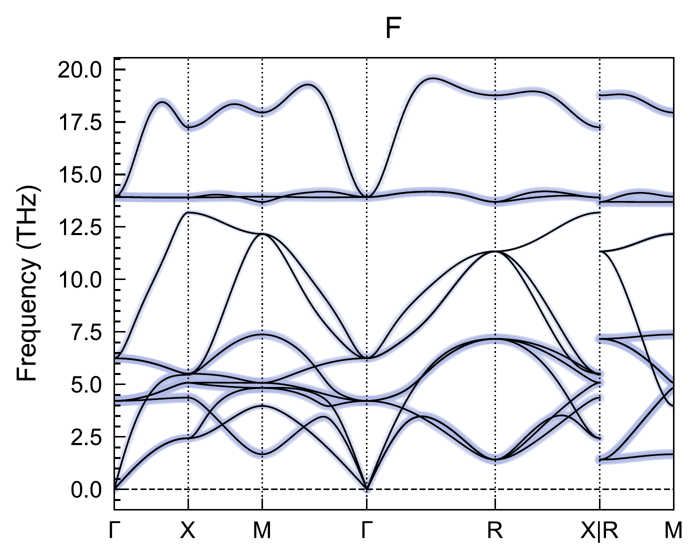
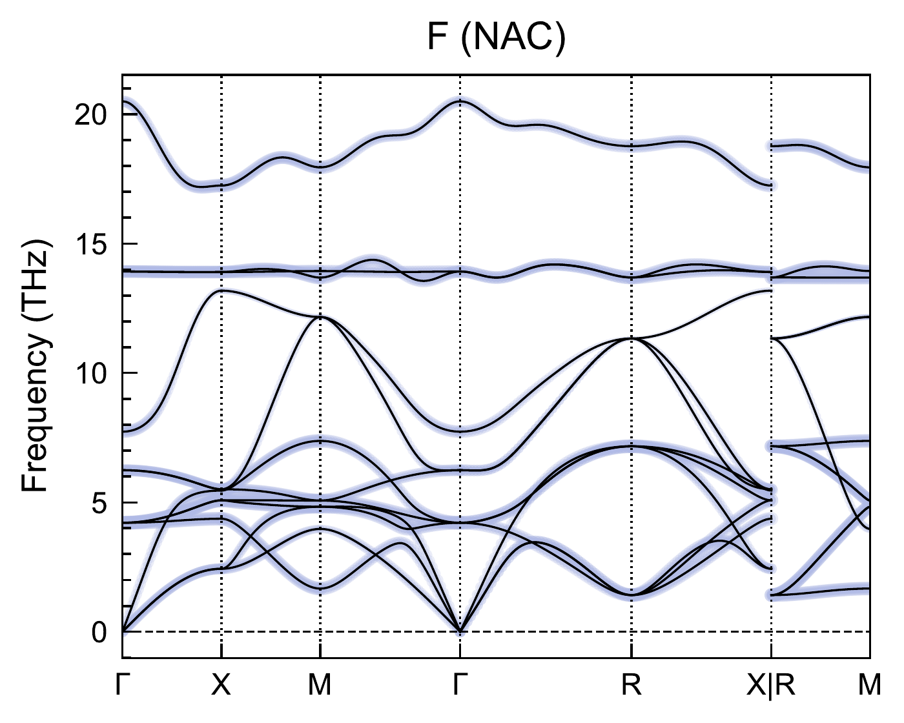
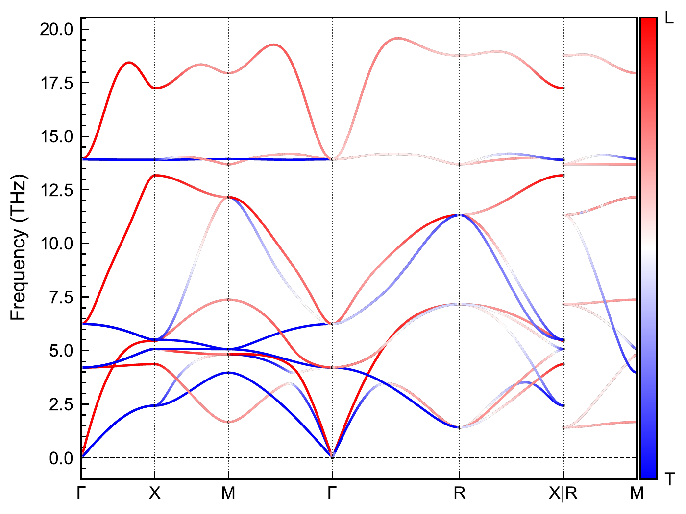

crystod-phonon#
Phonon analyses on top of phonopy data
(POSCAR + FORCE_SETS, or FORCE_CONSTANTS with --readfc, or
phonopy_params.yaml). Seven mode flags: --irreps, --fatband, --lt,
--vector, --modulation, --vibration, --subgroup.
I want to … |
command |
|---|---|
label every mode with its irrep |
|
know which Gamma modes are IR / Raman active or silent |
|
get the form of the Raman tensor of each Raman-active mode |
|
get mode effective charges and the static dielectric constant |
|
see which Wyckoff orbit gives which Gamma modes |
|
see which element carries which branch |
|
see which branch is longitudinal |
|
draw one mode as arrows in VESTA |
|
freeze a mode into a structure |
|
list the symmetry-allowed modes, no forces |
|
know which phases an instability can reach |
|
… and get those structures |
|
28. Phonon irreps (--irreps)#
Example directory: example/28_phonon_irrep (testsuite section 28)
Label the phonon modes at the special q points with their irreducible
representations and write phonon_irreps.yaml:
cd example/28_phonon_irrep/SrTiO3_Pm-3m
crystod-phonon --irreps --dim 4 4 4 -c 221_PPOSCAR_SrTiO3
# -> phonon_irreps.yaml (--readfc reads FORCE_CONSTANTS instead of FORCE_SETS)
The file lists, for every special q point, the modes grouped into degenerate sets with their ISO-IR (ISOTROPY, Miller-Love) irrep labels and frequencies in THz — note the antiferrodistortive soft mode at R, an imaginary (negative-frequency) R5- triplet:
space_group: Pm-3m
nac: false
special_points:
- # GM
q_position: [0.0, 0.0, 0.0]
- # R
q_position: [0.5, 0.5, 0.5]
- # X
q_position: [0.0, 0.5, 0.0]
- # M
q_position: [0.5, 0.5, 0.0]
irreps:
- q_label: GM
q_position: [0.0, 0.0, 0.0]
activity_summary: GM4- x4 (3 IR, 1 acoustic), GM5- x1 (silent)
- # 1 2 3
irrep_label: ['GM4-(3)']
mulliken: T1u
frequency: 0.0000003685
activity: [acoustic]
- # 4 5 6
irrep_label: ['GM4-(3)']
mulliken: T1u
frequency: 2.6629186664
activity: [IR]
...
- q_label: R
q_position: [0.5, 0.5, 0.5]
- # 1 2 3
irrep_label: ['R5-(3)']
frequency: -1.0867090338
...
The comment above each entry (# 1 2 3) gives the 1-based band indices, so a
level can be fed straight back into --vector --mode or --modulation --mode.
At Γ each set also carries the Mulliken symbol of its irrep in a mulliken:
line after irrep_label:, and its spectroscopic activity in an activity:
line (section 29). The terminal prints the Γ activity summary and the name of
the file.
The name R5- refers to the setting of the input file, which has Sr at the
origin; with Ti at the origin, or with an origin that is not a standard one,
the same mode is R4+ — see
Irrep labels and the frame of a structure
for the rules every command follows (origin, axes, supercells, the names of
-k stars).
NAC and the BORN file (--nac)#
The non-analytical term correction is applied only with --nac, in every mode
that reads force data (--irreps, --fatband, --lt, --vector,
--modulation, --subgroup): it then reads BORN from the working
directory (--modulation also looks next to the cell file; with --yaml, the
NAC parameters stored in the yaml come first, as in phonopy), and stops with
an error when there is none. Without --nac a BORN file lying in the
directory is not read. The header of phonon_irreps.yaml records the choice
(nac: true / nac: false), and the terminal says where the charges came
from:
NAC: Born effective charges and dielectric tensor read from BORN.
At Γ itself phonopy applies no q direction, so the --irreps labels and
frequencies at GM are those of the TO modes either way; NAC changes the
frequencies near Γ, e.g. the LO branch of a --vector or --modulation run
at a small q.
Symmetry lines as well (--all-irreps)#
The default survey covers the special points. --all-irreps additionally
labels the midpoint of every seekpath path segment — the symmetry lines
(DT, Z, SM, LD, S, T, …) — and writes phonon_irreps_all.yaml instead, so
both surveys can coexist in one directory:
crystod-phonon --irreps --dim 4 4 4 -c 221_PPOSCAR_SrTiO3 --all-irreps
# -> phonon_irreps_all.yaml
k_path: GM-X-M-GM-R-X | R-M # seekpath
path_midpoints: # midpoints of the k-path segments, ISO-IR k-vector types
- # DT (midpoint of GM-X)
q_position: [0.0, 0.25, 0.0]
- # Z (midpoint of X-M)
q_position: [0.25, 0.5, 0.0]
...
- q_label: DT
segment: GM-X
q_position: [0.0, 0.25, 0.0]
- # 1 2
irrep_label: ['DT5(2)']
frequency: 2.1278014037
- # 3
irrep_label: ['DT1(1)']
frequency: 3.7542651577
...
This is the labeling that tells a branch apart along a line — which of the two
DT5 branches is which — and it is slower than the special-points-only
default. On a line the ISO-IR label is evaluated at the canonical value of the
line parameter (the smallest one, positive when the two signs are equally
small), so the same physical k point gets the same label whichever arm of the
star or copy k + G is given (DT of F-43m at (0,0,-1/2) is evaluated on the arm
(0,0,-a) at a = 1/2). The k_path and segment names are seekpath’s; for an
input outside the ISO-IR setting, an endpoint to which the frame of the labels
gives another ISO-IR type than spglib’s frame, in which seekpath names its
points, is printed with its ISO-IR name (the seekpath P of a shifted I-4
cell, which carries PA labels, as GM-X-PA-N-...).
29. Phonon activity (IR, Raman, mode charges)#
Example directory: example/29_phonon_activity (testsuite section 29)
The Γ phonons are the ones first-order infrared absorption and Raman scattering see. This section reads the spectroscopic side of a phonon calculation off them, for assigning measured spectra or checking a calculation against them: which modes are IR active, Raman active or silent, the Raman tensor of each line and, with Born effective charges, what each IR mode adds to the static dielectric constant. The group theory: a mode is IR active when its irrep occurs in the vector representation, and Raman active when it occurs in the symmetric square of the vector representation, the representation of the polarizability tensor. There is no mode flag of its own; the results are printed by these commands:
output |
command |
|---|---|
IR / Raman / silent / acoustic of every Γ set, with Mulliken symbols |
|
the same from the structure alone, no forces |
|
mode effective charges, Δε of every Γ set, ε0, LST check |
|
Raman tensor of every Raman-active irrep |
add |
Spectroscopic activity#
At Γ every degenerate set gets its spectroscopic activity, IR, Raman,
both, silent or acoustic, and the terminal prints the summary in a
* Gamma-point activity * block, one irrep per line:
crystod-phonon --irreps --dim 4 4 4 -c 221_PPOSCAR_SrTiO3
* Gamma-point activity *
GM4- [T1u] x4 (3 IR, 1 acoustic)
GM5- [T2u] x1 (silent)
* Output files *
Phonon irreps written to: phonon_irreps.yaml
How to read it:
GM4- [T1u]is the ISO-IR label with its Mulliken symbol in brackets;x4is the number of degenerate sets that carry it, followed by what they are: here one acoustic set and three IR-active optical sets. Theactivity_summary:line ofphonon_irreps.yamlis the same summary without the brackets, and every Γ set of the file has itsmulliken:andactivity:lines (section 28).IR active: the irrep occurs in the vector representation (character
tr R), so the mode carries an electric dipole. Raman active: it occurs in the symmetric square of the vector representation (character(tr(R)^2 + tr(R^2)) / 2). silent: neither.acoustic: the three rigid translations, reported as
acousticrather than IR although their irrep is that of the vector representation; a set holds as many of them as the summed rigid-translation weight of its mass-weighted eigenvectors.“Active” means allowed by symmetry: the intensity of an allowed line can still be too weak to observe.
unknownmarks a set whose characters are not those of a representation (too small a--tolerancesplit a degenerate set; raise it),?a set that could not be labelled.
For cubic SrTiO3 this is the textbook result: GM4- (T1u) is IR active, GM5- (T2u) silent, and nothing is Raman active; the optical GM5+ (T2g) triplet of Si is Raman active only; in tetragonal BaTiO3 (P4mm) GM1 (A1) and GM5 (E) are IR and Raman active and GM2 (B1) is Raman only. The multiplicities come from the characters alone and agree with the selection-rule table of the Bilbao SAM program.
A set can hold more than one irrep: the acoustic set of a polar crystal
(GM1 + GM5 of BaTiO3, all at 0 THz), or optical irreps within --tolerance
of each other. Such a set is split per irrep: its acoustic bands go to the
irreps of the vector representation, every other copy keeps its own
activity, and the activity: line lists every kind that occurs
([IR, silent, acoustic]). The summary therefore does not depend on the
tolerance: with --tolerance 2.7 the first twelve bands of SrTiO3 form one
set GM4- + GM5-, and the summary is still
GM4- x4 (3 IR, 1 acoustic), GM5- x1 (silent).
Mulliken symbols. The symbols in brackets (and the mulliken: lines,
A1 + E for a set holding two irreps) come from phonopy’s point-group
character tables, matched to the characters of the ISO-IR irreps after the
rotations are carried to the conventional standard setting as phonopy does
it, so they are the symbols phonopy itself prints. B1/B2 (and B1/B2/B3)
therefore follow phonopy’s axis convention, which can differ from other
tables: the Bilbao POINT/SAM and ISOTROPY tables swap B1 and B2 of 622 and
6/mmm (the silent mode of MgB2 is B1g here and B2g there), and in the P-4m2
settings (space groups 115-120) B1 is the irrep that transforms as xy. The
symbols refer to the axes of the standard setting even for a cell given in
another setting (Pbnm instead of Pnma, for instance). A complex irrep and its
conjugate both get the symbol of the physically irreducible pair (E of the
point group 3), so a one-dimensional member of a pair is shown as GM2 [E];
other tables name the members 1E and 2E.
Mode effective charges and the dielectric tensor (--irreps --nac)#
With --nac, the Born effective charges and the electronic dielectric tensor
of BORN also give the polar response of the Γ phonons (the input is that of
example/30_phonon_fatband/ScF3_Pm-3m):
crystod-phonon --irreps --dim 4 4 4 -c 221_PPOSCAR_ScF3 --nac
NAC: Born effective charges and dielectric tensor read from BORN.
* Gamma-point activity *
GM4- [T1u] x3 (2 IR, 1 acoustic)
GM5- [T2u] x1 (silent)
* Gamma-point dielectric response (Born effective charges from BORN) *
set irrep freq (THz) activity |Z~| (e/sqrt(amu)) Delta eps (xx, yy, zz)
1 GM4- 0.0000 acoustic 0.0000 -
2 GM5- 4.2122 silent 0.0000 0.0000 0.0000 0.0000
3 GM4- 6.2446 IR 0.7313 2.9993 2.9993 2.9993
4 GM4- 13.9231 IR 1.4304 2.3086 2.3086 2.3086
eps_inf (diag): 2.2839 2.2839 2.2839
sum Delta eps (diag): 5.3079 5.3079 5.3079
eps_0 (diag): 7.5919 7.5919 7.5919
sum_kappa Z*_kappa: max |deviation| = 1.00e-08 (acoustic sum rule)
LST check: prod (nu_LO/nu_TO)^2 = 3.3240, eps_0/eps_inf = 3.3240 (q -> 0 along [1 0 0])
* Output files *
Phonon irreps written to: phonon_irreps.yaml
How to read it (one row per degenerate set, then the totals):
the mode effective charge of a band is the dipole its displacement carries: the Born charge tensor of every atom applied to that atom’s displacement in the mode (the eigenvector divided by the square root of the mass, in amu), summed over the atoms; unit e/sqrt(amu).
|Z~|is the root of the sum of its squares over the bands of the set, which does not depend on how the degenerate eigenvectors were chosen;the oscillator strength of a set is the sum over its bands of the outer product of the mode effective charge with itself;
its contribution to the static dielectric tensor is
Delta eps = C S / (Omega nu^2), withSthe oscillator strength,Omegathe primitive-cell volume in Å^3,nuthe frequency in THz andC = e^2 / (eps_vac amu)in these units, 4.4225e4; the acoustic bands are left out;eps_0 = eps_inf + sum Delta eps, witheps_infthe electronic tensor ofBORN;the acoustic sum rule says that the Born charges of all atoms of the cell add up to zero; the line gives the largest element of that sum, a check of the
BORNfile;the Lyddane-Sachs-Teller check compares the product over the optical bands of
(nu_LO / nu_TO)^2witheps_0 / eps_infalong the same direction:nu_LOare phonopy’s frequencies with the non-analytical term for q -> 0 along [1 0 0] (reduced reciprocal coordinates),nu_TOthose without it. Only the bands that carry a dipole along q change, so the product is that of the LO/TO pairs. Both numbers come out of independent calculations, and their agreement checks the charges, the frequencies and the units together.
An imaginary optical mode with a dipole (a polar soft mode) enters with
nu^2 < 0, so its Delta eps is negative; the table then adds the line
note: N imaginary optical band(s) (bands ...) contribute with negative sign; eps_0 is not a static dielectric constant of an unstable structure. The
eigenvectors of each degenerate subspace are made real before the charges are
formed (the dynamical matrix at Γ is real), so |Z~| does not depend on the
eigenvectors phonopy returns inside it.
phonon_irreps.yaml gets the two tensors in its header and two lines per Γ
set:
nac: true
dielectric_electronic: [[2.283939, 0.000000, 0.000000], [0.000000, 2.283939, 0.000000], [0.000000, 0.000000, 2.283939]]
dielectric_static: [[7.591860, 0.000000, 0.000000], [0.000000, 7.591860, 0.000000], [0.000000, 0.000000, 7.591860]]
...
- # 10 11 12
irrep_label: ['GM4-(3)']
mulliken: T1u
frequency: 13.9231282991
activity: [IR]
mode_effective_charge: [[0.000000, -0.011905, -0.825778], [0.000000, -0.825778, 0.011905], [-0.825864, 0.000000, 0.000000]]
dielectric_contribution: [2.308629, 2.308629, 2.308629]
mode_effective_charge holds one Cartesian vector per band (its direction
inside a degenerate set follows phonopy’s choice of eigenvectors);
dielectric_contribution is the diagonal of Delta eps.
Raman tensors (--raman-tensor)#
--raman-tensor adds the symmetry-allowed form of the Raman tensor of every
Raman-active irrep among the Γ phonons. It works with --irreps and, from the
structure alone, with --vibration --qpoint GM:
crystod-phonon --irreps --dim 4 4 4 -c 227_PPOSCAR_Si --raman-tensor
* Gamma-point activity *
GM4- [T1u] x1 (acoustic)
GM5+ [T2g] x1 (Raman)
* Raman tensors (Cartesian axes of the input cell) *
GM5+ [T2g] (3 tensors): [[0, 0, 0], [0, 0, a], [0, a, 0]] [[0, 0, a], [0, 0, 0], [a, 0, 0]] [[0, a, 0], [a, 0, 0], [0, 0, 0]]
* Output files *
Phonon irreps written to: phonon_irreps.yaml
How to read it:
The tensors are written in the Cartesian axes of the input cell (the axes of the POSCAR lattice vectors), so that they can be compared with a polarization geometry in the laboratory frame of that cell. The Mulliken symbol in brackets refers to the axes of the standard setting, so for a cell in a non-standard setting (Pbnm instead of Pnma) the tensor of B1g need not be xy.
The tensors of one irrep are a basis of the symmetric second-rank tensors that transform as it (the character projector of the irrep on the six components xx, yy, zz, yz, xz, xy), chosen sparsest first, each with its own free constant
aand exact entries where possible (-2*a,sqrt(3)/2*a). A complex irrep is listed together with its conjugate (GM2GM3).For an irrep that occurs once in the symmetric square the tensors are its partners (the cubic Eg pair
diag(a, a, -2a)anddiag(a, -a, 0)). A one-dimensional irrep that occurs twice (A1 of 4mm and 6mm) prints its two basis tensors, and a mode’s tensor is a combination of them (diag(a, a, b)).
An irrep of dimension two that occurs twice (E of 3m, -3m and 32, and the complex E pair of 3 and -3) is printed per partner instead, with constants shared across the partners, as in the tables:
crystod-phonon --vibration -c 166_PPOSCAR_Bi --qpoint GM --raman-tensor
...
* Raman tensors (Cartesian axes of the input cell) *
GM1+ [A1g] (2 tensors): [[a, 0, 0], [0, a, 0], [0, 0, 0]] [[0, 0, 0], [0, 0, 0], [0, 0, a]]
GM3+ [Eg] (2 partners, constants a, b): [[a, 0, 0], [0, -a, b], [0, b, 0]] [[0, a, b], [a, 0, 0], [b, 0, 0]]
The two partners of a mode of the irrep have these forms with the same a
and b; partner 2 follows from partner 1 by symmetry, and its overall sign
is a convention (Loudon’s second Eg tensor of -3m is the negative of the one
printed here). For the complex E pair of 3 and -3 the partners carry four
constants, [[a, d, c], [d, -a, b], [c, b, 0]] and
[[d, -a, -b], [-a, -d, c], [-b, c, 0]]. In a rotated setting the entries
become combinations such as a - sqrt(3)*b. The forms agree with the tables
of R. Loudon, Adv. Phys. 13, 423 (1964):
crystal |
irrep |
tensors |
|---|---|---|
Si (Fd-3m) |
GM5+ (T2g) |
yz, xz, xy pairs |
SrTiO3 (Pm-3m) |
none |
|
BaTiO3 (P4mm) |
GM1 (A1) |
diag(a, a, 0), diag(0, 0, a) |
GM2 (B1) |
diag(a, -a, 0) |
|
GM5 (E) |
yz, xz pairs |
|
ZnO (P6_3mc) |
GM1 (A1) |
diag(a, a, 0), diag(0, 0, a) |
GM5 (E2) |
diag(a, -a, 0), xy pair |
|
GM6 (E1) |
yz, xz pairs |
|
Bi (R-3m) |
GM1+ (A1g) |
diag(a, a, 0), diag(0, 0, a) |
GM3+ (Eg) |
[[a, 0, 0], [0, -a, b], [0, b, 0]], [[0, a, b], [a, 0, 0], [b, 0, 0]] |
|
ZnRe2O8 (R-3) |
GM2+GM3+ (Eg) |
2 partners, 4 constants (Loudon’s C3i form) |
A cell rotated in space gives the rotated tensors (diamond Si turned by 45°
about z has diag(a, -a, 0) in place of the xy pair).
Limits. The activities and tensors are symmetry selection rules for
first-order (one-phonon) IR absorption and Raman scattering at Γ: they say
which lines can appear and in which polarizations, not their intensities
(the dielectric table gives the IR oscillator strengths from the Born
charges; Raman intensities need the polarizability derivatives). The point
group is that of the atomic structure; magnetic order is not taken into
account. --raman-tensor takes Γ only (--vibration at another q point
stops with an error).
Python API. The MCP tool is crystod_phonon_activity (the Γ activity
table, the Wyckoff-orbit breakdown and the Raman tensors of a POSCAR, without
force constants):
from crystod import phonon
from crystod.vasp_io import read_poscar_cell
cell = read_poscar_cell("221_PPOSCAR_SrTiO3") # or a phonopy object with forces
phonon.gamma_mode_activities(cell) # list of Activity records, one per mode space or set
phonon.gamma_raman_tensors(read_poscar_cell("227_PPOSCAR_Si")) # list of RamanTensors
phonon.mulliken_symbols(cell) # {'GM1+': 'A1g', ..., 'GM4-': 'T1u', ...}
import phonopy # example/30_phonon_fatband/ScF3_Pm-3m
ph = phonopy.load(unitcell_filename="221_PPOSCAR_ScF3", supercell_matrix=[4, 4, 4],
force_sets_filename="FORCE_SETS", born_filename="BORN", is_nac=True)
phonon.dielectric_response(ph).eps_static # DielectricResponse; diagonal 7.5919
phonon.mode_effective_charges(ph) # (n_bands, 3) array at Gamma, e/sqrt(amu); here (12, 3)
30. Phonon fatbands (--fatband)#
Example directory: example/30_phonon_fatband (testsuite section 30)
Plot phonon fatbands colored by the element-projected phonon density (sum of
squared eigenvector components over each element’s atoms), directly from
POSCAR + FORCE_SETS (or FORCE_CONSTANTS with --readfc):
cd example/30_phonon_fatband/ScF3_Pm-3m
crystod-phonon --fatband -c 221_PPOSCAR_ScF3 --dim 4 4 4
# -> fatband_Sc.pdf, fatband_F.pdf


fatband_F.pdf for ScF3 (4x4x4 FORCE_SETS): the F-projected weight (shading)
concentrates on the soft rotational branches around R and M and on the
high-frequency stretching bands, while the Sc-dominated mid-frequency bands
stay unshaded (they appear in fatband_Sc.pdf instead).#
The space group is detected, the high-symmetry k-path is generated
automatically with seekpath, and the band structure is computed with
eigenvectors and band connection through the phonopy API — no band.yaml
needed. One PDF per element is written, in the VESTA default element colors,
with dot sizes proportional to the projected weight.
Options: --element F restricts the output to one element; --band/--band-labels
supply a manual k-path instead of seekpath; --npoints sets the q-point density
per path leg (default 51); --projection-direction "0 0 1" projects the
displacements onto a direction in reduced coordinates before squaring.
Plotting style based on script/phonon_fatband.py by Hiroki Koiso.
LO/TO splitting (--nac)#
crystod-phonon --fatband -c 221_PPOSCAR_ScF3 --dim 4 4 4 --nac
# -> fatband_nac_Sc.pdf, fatband_nac_F.pdf


fatband_nac_F.pdf — the same F-projected fatband with the non-analytical
term correction (a BORN file in the current directory). The LO/TO splitting
lifts the highest F-dominated branch at Gamma from 13.9 to 20.5 THz, while the
zone-boundary soft modes at R and M are untouched: the correction acts only in
the long-wavelength limit. The plot title carries an “(NAC)” tag, and the file
names get a nac_ prefix so corrected and uncorrected fatbands coexist.#
31. Longitudinal/transverse bands (--lt)#
Example directory: example/31_phonon_lt (testsuite section 31)
Plot the phonon band structure colored by the longitudinal/transverse character of each mode (red = longitudinal, blue = transverse, white = mixed or Gamma):
cd example/31_phonon_lt/ScF3_Pm-3m
crystod-phonon --lt -c 221_PPOSCAR_ScF3 --dim 4 4 4
crystod-phonon --lt -c 221_PPOSCAR_ScF3 --dim 4 4 4 --nac
# -> phonon_band_LT.pdf / phonon_band_LT_nac.pdf


phonon_band_LT.pdf for ScF3: red = longitudinal, blue = transverse,
white = mixed. Along GM-X the acoustic set splits visibly into one red L
branch and two blue T branches; the flat band near 14 THz is purely
transverse throughout the zone.#
The longitudinal character of a mode is sqrt(sum_atoms |q_hat . e_atom|^2),
the norm of the eigenvector projection onto the propagation direction, which is
valid along any path direction including diagonal segments such as GM-R. With
--nac the split-off LO branches show up as purely red. Based on
script/LT_phonon_band.py maintained by Hiroki Koiso, after Qijing Zheng.
32. Phonon eigenvectors (--vector)#
Example directory: example/32_phonon_vector (testsuite section 32)
Diagonalize the dynamical matrix directly at the selected q point via the
phonopy API, list the modes with their frequencies and irrep labels, and export
the selected eigenvectors as .vesta files with per-atom displacement arrows:
cd example/32_phonon_vector/Si_Fd-3m
crystod-phonon --vector --dim "4 4 4" -c 227_PPOSCAR_Si --qpoint GM
* Structure *
Space group: Fd-3m (#227)
* Available high-symmetry q-points *
GM [0.0, 0.0, 0.0]
L [0.5, 0.5, 0.5]
X [0.5, 0.0, 0.5]
W [0.5, 0.25, 0.75]
* Selected Q point *
Selected q-point: GM = [0.0, 0.0, 0.0]
* Phonon modes at q = GM *
Mode Freq (THz) Irrep
----------------------------------------
1 0.0000 GM4-(3)
2 0.0000 GM4-(3)
3 0.0000 GM4-(3)
4 14.9571 GM5+(3)
5 14.9571 GM5+(3)
6 14.9571 GM5+(3)
* Displacement patterns *
No --mode given; exporting all 6 modes as individual VESTA files.
Commensurate supercell for visualization: 1x1x1
+ mode 1: GM4-(3), 0.0000 THz
...
+ mode 6: GM5+(3), 14.9571 THz
Arrows are scaled so the largest displacement is 1.5 A; adjust arrow size in VESTA via Edit > Vectors or Properties > Vectors if needed.
* Output files *
Mode table written to: phonon_modes_Si_GM.txt
Mode 1 written to: POSCAR_Si_GM_mode1_GM4-.vesta
...
Mode 6 written to: POSCAR_Si_GM_mode6_GM5+.vesta
The mode table of the * Phonon modes at q = ... * block is also saved as
phonon_modes_<formula>_<qlabel>.txt.
Select the modes with --mode (1-based, as in the table above); several mode
numbers are summed into one displacement pattern:
# one optical GM5+ mode
crystod-phonon --vector --dim "4 4 4" -c 227_PPOSCAR_Si --qpoint GM --mode 4
# the whole triplet, summed
crystod-phonon --vector --dim "4 4 4" -c 227_PPOSCAR_Si --qpoint GM --mode 4 5 6
# X point: the commensurate supercell (2x1x2) and Bloch phases are applied automatically
crystod-phonon --vector --dim "4 4 4" -c 227_PPOSCAR_Si --qpoint X --mode 1 --readfc
# conventional cell (POSCAR_Si_GM_mode4+5+6_GM5+_conv.vesta)
crystod-phonon --vector --dim "4 4 4" -c 227_PPOSCAR_Si --qpoint GM --mode 4 5 6 --conventional
Files are auto-named POSCAR_<formula>_<qlabel>_mode<N>_<irrep>.vesta (mode
numbers zero-padded so ls lists them in order) and open directly in
VESTA, showing the equilibrium structure with
red arrows for the real part of the mass-weighted eigenvector displacement,
rescaled so that the largest displacement equals --amplitude (default
1.5 Angstrom).
Degenerate modes are exported as symmetry-adapted eigenvectors: the
dynamical matrix is block-diagonalized in the spgrep irrep-projected basis (the
same construction as --modulation), so the three degenerate GM5+ optical
modes of Si point exactly along the cubic axes instead of the arbitrary tilted
combinations a plain eigensolver returns. The exported vectors are exact
eigenvectors of the phonopy dynamical matrix, verified internally against the
phonopy spectrum.
--qpoint accepts a high-symmetry label (GM, X, L, …) or three
primitive reciprocal coordinates (fractions allowed). For a q point that is not
special, the file name carries its ISO-IR k-vector type (SM, DT, …);
--keep-q-coords names it by coordinates instead (see section 33), so a scan
along one symmetry line does not overwrite itself.
33. Phonon modulation (--modulation)#
Example directory: example/33_modulation (testsuite section 33)
Generate modulated (displaced) structures from symmetry-adapted phonon modes.
The inputs are the ones you already have — the unit cell and FORCE_SETS
(or FORCE_CONSTANTS with --readfc); a phonopy_params.yaml works too, but
none has to be produced first:
cd example/33_modulation/ScF3_Pm-3m
crystod-phonon --modulation -c 221_PPOSCAR_ScF3 --qpoint 0.5 0.5 0.5 --mode 1 2 3 --amplitude 0.3
crystod-phonon --modulation --yaml phonopy_params.yaml --qpoint 0.5 0.5 0.5 --mode 1 2 3 --amplitude 0.3
The two write the same structure, byte for byte. FORCE_SETS is looked for in
the current directory first and then next to the -c file, so
-c ../221_PPOSCAR_ScF3 works from a scratch directory. --yaml and -c are
alternatives, not a pair:
crystod-phonon: error: --modulation takes either --yaml or -c (with FORCE_SETS/FORCE_CONSTANTS), not both.
Where the supercell comes from#
--modulation is the one mode that does not need --dim —
--irreps/--fatband/--lt/--vector/--subgroup still do. It resolves the
supercell of the force calculation in this order, and always prints what it
used, so an inferred supercell is never silent:
source |
when |
|
|---|---|---|
1 |
|
given explicitly; wins over the rest |
2 |
the |
that file sits in the current directory |
3 |
the atom count of |
nothing else says |
crystod-phonon --modulation -c 221_PPOSCAR_ScF3 --dim "4 4 4" --qpoint 0.5 0.5 0.5 --mode 1 2 3 --amplitude 0.3
crystod-phonon --modulation -c 221_PPOSCAR_ScF3 --readfc --qpoint 0.5 0.5 0.5 --mode 1 2 3 --amplitude 0.3
# --readfc reads FORCE_CONSTANTS (the shipped example directory carries FORCE_SETS)
* Phonon source *
Supercell 4x4x4 read from phonopy_disp.yaml. Primitive cell: 4 atoms of the 4-atom input cell (primitive_matrix auto).
* Selected Q point *
Loading '221_PPOSCAR_ScF3 + FORCE_SETS' at q = [0.5, 0.5, 0.5]...
* Phonon source *
Supercell 4x4x4 inferred from the 256 atoms of FORCE_SETS; pass --dim if that is not the supercell of your force calculation. Primitive cell: 4 atoms of the 4-atom input cell (primitive_matrix auto).
Case 3 counts atoms, so it fixes only the product n1*n2*n3; the shape is
picked to respect the metric of the cell (|a| = |b| forces n1 = n2). It is
a guess, the message says so, and --dim overrides it. For the ScF3 example
every route in the table — and --yaml — writes the same file, byte for byte.
A supercell that is not diagonal is refused rather than guessed at — any diagonal guess with the right atom count loads without complaint, so the error would otherwise be silent:
ERROR: 'phonopy_disp.yaml' states a supercell_matrix that is not a positive diagonal matrix; this workflow supports diagonal supercells only. Inferring one instead would silently give the wrong answer, since any guess with the right atom count loads without complaint. Use --yaml phonopy_params.yaml, or give the diagonal supercell with --dim "n n n".
Note
The -c route takes the primitive cell the way every other crystod-phonon
mode does — primitive_matrix="auto" — while a phonopy_params.yaml carries
whatever primitive matrix it was built with. For a primitive input cell (any P
lattice) the two coincide, which is why the commands above agree byte for byte;
hand -c a centred conventional cell and the -c route works in the smaller
primitive cell instead. The printed Primitive cell: line always says which
one you got.
Choosing the modes#
When --mode is omitted, only the mode table and the star of q are printed, so
the modes at a q point can be inspected before choosing:
crystod-phonon --modulation -c 221_PPOSCAR_ScF3 --qpoint 0.5 0.5 0.5
* Phonon source *
Supercell 4x4x4 read from phonopy_disp.yaml. Primitive cell: 4 atoms of the 4-atom input cell (primitive_matrix auto).
* Selected Q point *
Loading '221_PPOSCAR_ScF3 + FORCE_SETS' at q = [0.5, 0.5, 0.5]...
* Phonon modes at q = [0.5 0.5 0.5] *
Mode Freq (THz) Irrep Degeneracy
--------------------------------------------------
1 1.4169 R4+(3) 3
2 1.4169 R4+(3) 3
3 1.4169 R4+(3) 3
4 7.1689 R5+(3) 3
5 7.1689 R5+(3) 3
6 7.1689 R5+(3) 3
7 11.3334 R4-(3) 3
8 11.3334 R4-(3) 3
9 11.3334 R4-(3) 3
10 13.6922 R3+(2) 2
11 13.6922 R3+(2) 2
12 18.7661 R1+(1) 1
* Star of q (arms related by the space-group rotations) *
|G| = 48, |G_k| = 48, |star of k| = 1
arm 1: k = [+0.5, +0.5, +0.5]
No --mode given. Choose mode number(s) from the table above and rerun with
--mode (and optionally --amplitude) to generate a modulated structure.
Then apply the chosen modes:
crystod-phonon --modulation -c 221_PPOSCAR_ScF3 \
--qpoint 0.5 0.5 0.5 --mode 1 2 3 --amplitude 0.3
# -> MPOSCAR_R_mode1+2+3_R4+_R-3c
The soft octahedral-rotation triplet of ScF3 is the lowest R4+ set, modes 1-3;
applying all three with equal amplitudes condenses the (a,a,a) direction, and
the space group of the modulated structure is detected and printed as R-3c —
matching the --parent Pm-3m --irrep R4+ isotropy table of crystod-group
(section 17). The output name follows
MPOSCAR_{q}_{mode}_{irrep}_{subgroup} unless --output is given, and a single
--amplitude applies to all selected modes.
Note
The space group is reported at a 0.1 Å tolerance by default, which is what makes
a nearly-symmetric distortion read as the symmetric one. Pass --tolerance 1e-5
to classify the structure at the tolerance the order-parameter direction implies:
--mode 1 2 3 --amplitude 0.3 0.15 0.075 is the direction (a,b,c) and prints
P-1 at 1e-5, but C2/c at the default, because the smallest of the three
displacements is below 0.1 Å. For a parent structure that is itself
symmetric at 1e-5, the modes are exact to rounding error, so the symmetry of a
direction holds at 1e-5 too; a space group that appears only at the default
tolerance belongs to a nearby, more symmetric direction, not to the one frozen
in, and the 1e-5 result is the one to report. --tolerance also sets the
tolerance of the mode construction itself (default 1e-5).
Different q points can be combined with numbered argument sets
(--qpoint1/--mode1/--amplitude1, --qpoint2/--mode2/--amplitude2, …):
crystod-phonon --modulation --yaml phonopy_params.yaml \
--qpoint1 0 0.5 0.5 --mode1 1 --amplitude1 0.3 \
--qpoint2 0.5 0 0.5 --mode2 1 --amplitude2 0.3 \
--qpoint3 0.5 0.5 0 --mode3 1 --amplitude3 0.3 \
--output POSCAR_multi_q_arms
The star of q is displayed for each selected q point, which is what makes
combining arms of the same star (the three X or M arms of a perovskite)
straightforward. The X point of body-centred tetragonal Sr3Ti2O7 has two arms,
(0,0,1/2) and (1/2,1/2,0); its lowest mode, X3-, frozen into both with
equal amplitudes is the direction X3-(a;a):
cd example/33_modulation/Sr3Ti2O7_I4mmm
crystod-phonon --modulation --yaml phonopy_params.yaml \
--qpoint1 0 0 0.5 --mode1 1 --amplitude1 0.3 \
--qpoint2 0.5 0.5 0 --mode2 1 --amplitude2 0.3
...
* Modulation *
Term 1: q = [0.0, 0.0, 0.5], modes = [1], amplitudes (A) = [0.3]
Term 2: q = [0.5, 0.5, 0.0], modes = [1], amplitudes (A) = [0.3]
* Symmetry of the generated structure *
Space group: P4_2/mnm (#136)
Hall symbol: -P 4n 2n
* Output files *
Modulated structure written to: MPOSCAR_X_mode1_X3-_X_mode1_X3-_P4_2mnm
The blocks before * Modulation * are those of a single q point, repeated for
each term: * Selected Q point *, * Phonon modes at q = ... * and * Star of q ... *.
One arm alone gives X3-(0;a), Cmcm, and unequal amplitudes X3-(a;b), Pnnm
(check it with --tolerance 1e-5: at the default tolerance, amplitudes as
different as 0.3 and 0.16 still read as P4_2/mnm) — the rows of
crystod-group --parent I4/mmm --irrep X3-. --qpoint2 -0.5 0.5 0, the same
point written with another reciprocal lattice vector, writes the same
structure.
What is frozen in#
The displacement of atom j in the cell at lattice translation R is
u_j(R) = A Re[ v_j exp(2 pi i q.R) ], v_j = e_j exp(2 pi i q.x_j) / sqrt(m_j)
with A the --amplitude, e phonopy’s eigenvector of the mode (the
mass-weighted eigenvector of phonopy’s dynamical matrix, in its atom-position
phase convention), x_j and m_j the fractional position and the mass of atom
j, and v normalized over the primitive cell. This is the harmonic
eigen-displacement of the mode — heavy atoms move less than light ones — and for
a non-degenerate mode at a time-reversal-invariant q it is, up to its sign, the
pattern phonopy’s own MODULATION freezes in (the test suite compares the two,
section 33).
--amplitude(Å) is the norm of the displacement of one primitive cell. At a time-reversal-invariant q (2qa reciprocal lattice vector: Γ and the zone-boundary points such as X, M, R, N)vis real, and a mode frozen in with amplitudeAdisplaces every primitive cell of the supercell by a pattern of norm exactlyA(the default 0.3 Å). At any other q the complex vectorA vhas the normA, and the real displacement varies from cell to cell along the modulation.q may be written any way. It does not have to be the arm a table lists, and
q + Gis the same modulation asq:(0.5, 0.5, 0)and(-0.5, 0.5, 0)of Sr3Ti2O7 differ by a reciprocal lattice vector and write the same structure. Two different arms of the star are two different modulations (domains related by a rotation of the parent); the printed star lists them.Degenerate levels at a time-reversal-invariant q. The mode vectors are real, and the partners of a degenerate level are orthonormal real patterns along directions that symmetry operations fix up to sign; single partners and equal-amplitude combinations give order-parameter directions of the irrep (
--mode 1 2 3of the R4+ triplet of ScF3 is(a,a,a), R-3c). Where several such bases exist (the(a,0)and(a,a)directions of a two-dimensional irrep), the one whose single partners freeze into the most symmetric subgroups is taken — the largest point group, then the lowest space-group number — and the partners are listed in that order, so which subgroup--mode Ngives does not depend on the origin, the orientation or the lattice basis of the input cell. (This is not always ISOTROPY’s(a,0): for the M5- pair of ScF3 a single partner gives Pmma, which ISOTROPY lists as(a,a);--subgroup --modulategenerates every direction either way.) Equivalent partners (domains of one direction) are listed along the conventional crystal axes where those tell them apart:--mode 1,2and3of the R4+ triplet of ScF3 rotate the octahedra about a, b and c, and the x partner of a tetragonal pair comes before the y partner. Where they do not — the two Pnma partners of the X point of diamond Si, whose mirrors have the same orientations but lie in different places — the displacement patterns decide (read along the crystal axes, atom by atom, so this order follows the order of the atoms in the cell). Which domain comes out is a convention, but neither an origin shift nor a rigid rotation of the input changes it. The signs are conventions too: at Γ a partner has its largest component along the crystal axes positive; at any other such q reversing a partner only translates it by a lattice vector (which of the two copies is written depends on the origin), and the partners of one level are signed relative to each other, so--mode 1 2 3freezes into the same domain for every origin. The arms of a star are signed independently of each other: two arms differ at most by a translation, but with three or more (the M arms of a cubic crystal) an origin shift can turn a sum over arms into another domain of the same subgroup. At Γ, where no lattice translation can undo a sign, a partner that one of those operations reverses freezes into a lower-symmetry direction than its companion (a Γ E pair of a trigonal or hexagonal crystal, for instance). Where time reversal pairs a complex irrep with its conjugate, the pair forms one real level of twice the dimension (the Degeneracy column says so), whose partners are real but not all along such directions (the displacement patterns fix them instead, again independently of the origin).At any other q the global phase is a convention. The mode is a complex Bloch wave, and its overall phase — a shift of the modulation along the lattice — is fixed by a convention, not by the physics: the atom with the largest displacement is placed at the end of the major axis of the ellipse it moves on, in the cell at R = 0 (its largest component along the crystal axes positive). The rule does not depend on the orientation of the input, and an origin shift at most translates the result by a lattice vector. A structure frozen there is one member of a family related by that phase, and its space group is the one of that member; a single partner of a degenerate level is a complex Bloch partner, and its structure depends on the phase in the same way.
The cell is used as it is. The analysis runs on the primitive cell of the phonopy object — its origin, orientation and lattice basis are kept in the output (the atoms are only grouped by species, as a POSCAR needs), nothing is re-standardized. That cell must be primitive (
primitive_matrix="auto", which-cuses); aphonopy_params.yamlthat stores the conventional cell of a centred lattice as its primitive cell is refused with a message saying so. A structure that is symmetric only within a loose--toleranceis refused as well: symmetrize it before the force calculation.q must be commensurate. A q that no supercell of at most 12 cells per axis holds (
0.15, for instance) is refused before any mode is computed; give q as fractions with a denominator of at most 12 (1/7). The mode table at such a q can still be previewed without--mode.
Scanning a symmetry line (--keep-q-coords)#
A q point that is not a special point is named after its ISO-IR k-vector type,
so a scan along one line would keep overwriting the same file.
--keep-q-coords names the output by coordinates instead:
crystod-phonon --modulation --qpoint 0.25 0.25 0 --mode 1 --amplitude 0.2
crystod-phonon --modulation --qpoint 0.25 0.25 0 --mode 1 --amplitude 0.2 --keep-q-coords
Modulated structure written to: MPOSCAR_SM_mode1_SM3_Pmma # default
Modulated structure written to: MPOSCAR_q_0.25_0.25_0_mode1_SM3_Pmma # --keep-q-coords
The flag works the same way in --vector mode.
34. Vibration bases (--vibration)#
Example directory: example/34_vibration (testsuite section 34)
--vibration lists the symmetry-adapted displacement patterns of a structure
at one q point, grouped by irrep, from the crystal symmetry alone: no force
data are needed. It answers which irreps the vibrations at q span before any
phonon calculation (the counts of the Bilbao SAM program at Γ), and it writes
any one pattern as a displaced structure. The group theory: the
displacements of the atoms form the mechanical representation, which the
projection operators of the small irreps at q split into the mode spaces.
crystod-phonon --vibration -c 221_PPOSCAR_ScF3 --qpoint R
### Inputed cell was converted into primitive cell. ###
* Q points (primitive) *
GM (0, 0, 0)
R (1/2, 1/2, 1/2)
M (1/2, 1/2, 0)
X (0, 1/2, 0)
* Selected Q point *
R (1/2, 1/2, 1/2)
* Irrep-grouped vibration spaces *
Mode Space 1: irrep = R1+(1), dimension = 1, component numbers = 1..1
Mode Space 2: irrep = R3+(2), dimension = 2, component numbers = 1..2
Mode Space 3: irrep = R4+(3), dimension = 3, component numbers = 1..3
Mode Space 4: irrep = R4-(3), dimension = 3, component numbers = 1..3
Mode Space 5: irrep = R5+(3), dimension = 3, component numbers = 1..3
How to read it:
* Q points (primitive) *lists the ISO-IR special points of the space group, named as the irrep labels at them are named, as fractions of the reciprocal basis vectors of the primitive cell the mode spaces use (1/3,-1/2; a coordinate that is no simple fraction is written with four decimals). They are the points--irrepssurveys (thespecial_points:ofphonon_irreps.yaml, which may list them in another order), in the order of seekpath’s special-point table (GM, R, M, X for Pm-3m; GM, A, K, H, M, L for P6_3mc).--list-qpointsprints only this block and stops.* Selected Q point *is the point of--qpoint.Each
Mode Spaceline is one copy of an irrep: its ISO-IR label with the dimension in parentheses, and the numbers of its components (the values--component-indextakes). The 12 displacement degrees of freedom at R group into 1 + 2 + 3 + 3 + 3, the same irreps as the--modulationmode table of section 33.At Γ the lines also carry the Mulliken symbol and the activity, and two more blocks follow, three with
--raman-tensor(Spectroscopic activity at Γ).
Select one symmetry-allowed mode component, build the commensurate supercell, and export a displaced structure:
crystod-phonon --vibration -c 221_PPOSCAR_ScF3 --qpoint R \
--mode-index 3 --component-index 1 --output POSCAR_vibration
--qpoint accepts either one of the listed names (any case; GAMMA, G and
Γ also mean GM, and seekpath names such as H_2 are accepted for their
points) or three primitive reciprocal
coordinates (fractions such as 1/3 allowed). Coordinates are named after the
listed point they are, or the arm of its star they lie on, else after their
ISO-IR k-vector type (T for a point on the R-M line of a cubic crystal, PA
for the -k partner of P). --mode-index adds a * Selected basis vector *
block with the selected space and component, the commensurate supercell and
the first displacement vectors. Add --export-npz mode_data.npz to save
positions, displacement vectors, symbols, and lattice for notebook-side
visualization.
What is written#
The component is frozen in as
u_j(R) = A Re[ w_j exp(2 pi i q.R) ]
with A the --amplitude and w a unit-norm symmetry-adapted partner of the
selected mode space, which includes the Bloch factor exp(2 pi i q.x_j) of the
position x_j of atom j in the primitive cell that is written out. There are
no force constants and no masses here: w is a displacement pattern that
transforms as its irrep, not a normal mode. Its partners follow the conventions
of --modulation (What is frozen in), with every mode
space treated as one level:
At a time-reversal-invariant q (Γ and zone-boundary points such as X, M, R, N, Y) every component is real, and the displacement of each primitive cell has the norm
A. A single component freezes into an isotropy subgroup of its irrep: for a one-dimensional irrep the single-arm subgroup thatcrystod-group --parent SG --irrep IRlists (all six X3- spaces of Sr3Ti2O7 give Cmcm, the Y2- spaces of a Cmcm crystal give Pnma), and for the partners of a larger space the directions--modetakes in--modulation(the three R4+ components of ScF3 are the I4/mcm rotations about a, b and c, in that order). Where an irrep occurs once at q, the written pattern is the--modulationmode of that irrep. An origin shift of the input gives every component of an irrep the same space group. The labels refer to the input’s own origin when the input is already in the ISO-IR setting (the empty cube centre of ScF3 is such an origin, and the R irreps are renamed with it:R5-for theR4+rotations); any other description of the same crystal is labelled in a canonical frame, which keeps the input’s own origin when that is the origin of a standard description. Shifted copies of the crystal therefore get the same labels whatever their orientation or basis, while an unshifted re-based cell or a non-diagonal supercell can get names that differ from theirs, or from the cell’s, by a normalizer element (the rules and their limits are in Irrep labels and the frame of a structure).How a time-reversal-invariant q is written (
q,q + Gor-q) does not change the structure of a given irrep label, occurrence and component: the k-th mode space carrying a label writes the same file for every spelling. The mode-space numbers themselves follow the order in which the irreps are listed at the q given, and that order can differ between spellings (SrTiO3 I4/mcm lists M3+ first at0.5 0.5 -0.5and M1+ first at1.5 0.5 -0.5), so pick the mode space by its label in the listing of the q you use.An irrep that occurs several times has one mode space per occurrence. Without force constants nothing selects a combination of them, and any combination freezes into the same subgroup. The spaces are an orthonormal basis of all the patterns of that irrep fixed by the structure itself, not the copies the projection happens to return (those depend on how q is written): they are split by the atom orbit they live on (in the order of the first atom of each orbit), then by how the atoms move along the conventional crystal axes, then by the products of the displacements of neighbouring atoms, and listed in that order.
A complex irrep and its conjugate, which time reversal joins into one real space at a time-reversal-invariant q, share the real partners of that space: the first half belongs to the irrep whose label comes first (T1 before T2, GM2+ before GM3+), whichever of the two is listed first.
At any other q the component is a complex Bloch wave whose global phase is a convention, as in
--modulation, and the space group of the structure depends on it; for an irrep of dimension two or more the phases of the components relative to the first follow the irrep matrices built at the q given, soq + Gcan write another structure for them.The cell is the spglib primitive cell of the input (the
Inputed cell was converted into primitive cellnote), which is also the cell the supercell is built from; the q coordinates and the Bloch factors refer to it.
Spectroscopic activity at Γ#
Example directory: example/29_phonon_activity (testsuite section 29)
At --qpoint GM every mode space gets the Mulliken symbol and the activity of
its irrep (the rules of Spectroscopic activity),
followed by the summary, one irrep per line, from the structure alone:
crystod-phonon --vibration -c 221_PPOSCAR_SrTiO3 --qpoint GM
...
* Irrep-grouped vibration spaces *
Mode Space 1: irrep = GM4-(3) [T1u], dimension = 3, component numbers = 1..3, activity = IR
Mode Space 2: irrep = GM4-(3) [T1u], dimension = 3, component numbers = 1..3, activity = IR
Mode Space 3: irrep = GM4-(3) [T1u], dimension = 3, component numbers = 1..3, activity = IR
Mode Space 4: irrep = GM4-(3) [T1u], dimension = 3, component numbers = 1..3, activity = IR
Mode Space 5: irrep = GM5-(3) [T2u], dimension = 3, component numbers = 1..3, activity = silent
* Gamma-point activity *
GM4- [T1u] x4 (3 IR, 1 acoustic)
GM5- [T2u] x1 (silent)
(acoustic: one set per occurrence of the irrep in the vector representation;
without force constants the mode spaces are symmetry-adapted patterns,
not normal modes)
...
The symbol in square brackets is the Mulliken symbol of the irrep, printed at Γ only, after the label in every Γ block; its conventions (phonopy’s tables and axis convention, B1/B2 of the standard setting) are those of section 29.
Without force constants the mode spaces are symmetry-adapted patterns, not
normal modes, so the acoustic set is not one of them: the summary counts it
from the vector representation (one set per occurrence of an irrep there).
This is the Γ table of the Bilbao SAM program (SrTiO3: 4 T1u + T2u). With
--export-npz the file also holds an activities array, one entry per mode
space. Away from Γ nothing is added.
The Γ run also breaks the mode spaces down by orbit of equivalent atoms (the Wyckoff-position table of SAM):
* Wyckoff-orbit breakdown (Gamma) *
Wyckoff orbit Sr (1a): GM4- [T1u]
Wyckoff orbit Ti (1b): GM4- [T1u]
Wyckoff orbit O (3c): 2 GM4- [T1u] + GM5- [T2u]
sum over the orbits: 4 GM4- + GM5- (equals the mode-space list)
For each orbit (spglib’s equivalent atoms, with the Wyckoff letter and its
multiplicity in the conventional cell) the displacements of its atoms form a
representation whose character for an operation is the number of orbit atoms
it maps onto themselves (modulo lattice translations) times tr R; that
representation is decomposed into the Γ irreps of the mode spaces. The last
line checks that the orbits add up to the mode-space list. The library form
is crystod.phonon.wyckoff_orbit_decomposition. --raman-tensor prints the
Raman tensors after the breakdown (see
Raman tensors); at any other q point it is an
error. The whole Γ output of wurtzite ZnO:
crystod-phonon --vibration -c 186_PPOSCAR_ZnO --qpoint GM --raman-tensor
### Inputed cell was converted into primitive cell. ###
* Q points (primitive) *
GM (0, 0, 0)
A (0, 0, 1/2)
K (1/3, 1/3, 0)
H (1/3, 1/3, 1/2)
M (1/2, 0, 0)
L (1/2, 0, 1/2)
* Selected Q point *
GM (0, 0, 0)
* Irrep-grouped vibration spaces *
Mode Space 1: irrep = GM1(1) [A1], dimension = 1, component numbers = 1..1, activity = IR+Raman
Mode Space 2: irrep = GM1(1) [A1], dimension = 1, component numbers = 1..1, activity = IR+Raman
Mode Space 3: irrep = GM4(1) [B1], dimension = 1, component numbers = 1..1, activity = silent
Mode Space 4: irrep = GM4(1) [B1], dimension = 1, component numbers = 1..1, activity = silent
Mode Space 5: irrep = GM5(2) [E2], dimension = 2, component numbers = 1..2, activity = Raman
Mode Space 6: irrep = GM5(2) [E2], dimension = 2, component numbers = 1..2, activity = Raman
Mode Space 7: irrep = GM6(2) [E1], dimension = 2, component numbers = 1..2, activity = IR+Raman
Mode Space 8: irrep = GM6(2) [E1], dimension = 2, component numbers = 1..2, activity = IR+Raman
* Gamma-point activity *
GM1 [A1] x2 (1 IR+Raman, 1 acoustic)
GM4 [B1] x2 (silent)
GM5 [E2] x2 (Raman)
GM6 [E1] x2 (1 IR+Raman, 1 acoustic)
(acoustic: one set per occurrence of the irrep in the vector representation;
without force constants the mode spaces are symmetry-adapted patterns,
not normal modes)
* Wyckoff-orbit breakdown (Gamma) *
Wyckoff orbit Zn (2b): GM1 [A1] + GM4 [B1] + GM5 [E2] + GM6 [E1]
Wyckoff orbit O (2b): GM1 [A1] + GM4 [B1] + GM5 [E2] + GM6 [E1]
sum over the orbits: 2 GM1 + 2 GM4 + 2 GM5 + 2 GM6 (equals the mode-space list)
* Raman tensors (Cartesian axes of the input cell) *
GM1 [A1] (2 tensors): [[a, 0, 0], [0, a, 0], [0, 0, 0]] [[0, 0, 0], [0, 0, 0], [0, 0, a]]
GM5 [E2] (2 tensors): [[a, 0, 0], [0, -a, 0], [0, 0, 0]] [[0, a, 0], [a, 0, 0], [0, 0, 0]]
GM6 [E1] (2 tensors): [[0, 0, 0], [0, 0, a], [0, a, 0]] [[0, 0, a], [0, 0, 0], [a, 0, 0]]
Both 2b orbits give A1 + B1 + E2 + E1 as in SAM: the B1 pair is silent, E2 is Raman active only, and A1 and E1 are IR and Raman active, as observed for wurtzite ZnO. At any other q point the same layout is printed without the Γ-only blocks and without the brackets.
35. Subgroups from imaginary modes (--subgroup)#
Testsuite section 35
When a phonon band goes imaginary, the structure is unstable against the
distortion of that mode, and the symmetry it can lower to is fixed by the
irrep of the mode. --subgroup labels every imaginary mode and lists the
isotropy subgroups of its irrep — the possible daughter phases — in one step:
crystod-phonon --subgroup -c 221_PPOSCAR_SrTiO3 --dim "4 4 4"
* Parent structure *
Pm-3m (No. 221)
* Imaginary mode at q = (0.5, 0.5, 0.5) (R) *
mode 1, 2, 3: -1.086709 THz, irrep R5- (degeneracy 3)
* Order parameter directions and isotropy subgroups *
irrep subgroup size index
R5-(0,0,a) 140 I4/mcm 2 6
R5-(a,a,a) 167 R-3c 2 8
R5-(0,a,a) 74 Imma 2 12
R5-(0,a,b) 12 C2/m 2 24
R5-(a,a,b) 15 C2/c 2 24
R5-(a,b,c) 2 P-1 2 48
Without --qpoint, every q point commensurate with the supercell is scanned
(64 of them for a 4x4x4 supercell) and the imaginary levels are reported most
unstable first, so the unstable q points do not have to be known in advance.
With --qpoint R (a label or three coordinates) only that q point is analyzed.
The name in parentheses is that of the tabulated star q belongs to, in the
frame of the labels; a q point outside the tabulated stars (a point on a
line, or the -k partner PA of P in I-4) is printed without a name, its
levels carrying their ISO-IR labels (PA3, …).
--threshold sets the frequency below which a mode counts as imaginary
(default -0.1 THz; the acoustic modes at Γ, rigid translations, are never
listed, whatever the threshold), and --yaml phonopy_params.yaml may be used
instead of --dim/-c.
Each listed direction is one order-parameter direction of the degenerate
level. Freezing in a single eigenvector explores only one of them: the R-point
triplet of cubic SrTiO3 gives I4/mcm along (0,0,a), but the same triplet
also reaches R-3c along (a,a,a) and Imma along (0,a,a). The same
enumeration is available programmatically as
crystod.phonon.imaginary_mode_subgroups.
Generating the daughter structures (--modulate)#
--modulate runs the --modulation step
for every listed direction, so the candidate structures of a structure search
come out of the same command:
crystod-phonon --subgroup -c 221_PPOSCAR_SrTiO3 --dim "4 4 4" --qpoint R --modulate
* Distorted structures (amplitude 0.3 A) *
R5-(0,0,a) I4/mcm -> MPOSCAR_R_R5-_0-0-a_I4mcm
crystod-phonon --modulation -c 221_PPOSCAR_SrTiO3 --dim "4 4 4" --qpoint 0.5 0.5 0.5 --mode 1 --amplitude 0.3
R5-(0,a,a) Imma -> MPOSCAR_R_R5-_0-a-a_Imma
crystod-phonon --modulation -c 221_PPOSCAR_SrTiO3 --dim "4 4 4" --qpoint 0.5 0.5 0.5 --mode 1 2 --amplitude 0.3 0.3
R5-(0,a,b) C2/m -> MPOSCAR_R_R5-_0-a-b_C2m
crystod-phonon --modulation -c 221_PPOSCAR_SrTiO3 --dim "4 4 4" --qpoint 0.5 0.5 0.5 --mode 1 2 --amplitude 0.3 0.16434
R5-(a,a,a) R-3c -> MPOSCAR_R_R5-_a-a-a_R-3c
crystod-phonon --modulation -c 221_PPOSCAR_SrTiO3 --dim "4 4 4" --qpoint 0.5 0.5 0.5 --mode 1 2 3 --amplitude 0.3 0.3 0.3
R5-(a,a,b) C2/c -> MPOSCAR_R_R5-_a-a-b_C2c
crystod-phonon --modulation -c 221_PPOSCAR_SrTiO3 --dim "4 4 4" --qpoint 0.5 0.5 0.5 --mode 1 2 3 --amplitude 0.3 0.3 0.16434
R5-(a,b,c) P-1 -> MPOSCAR_R_R5-_a-b-c_P-1
crystod-phonon --modulation -c 221_PPOSCAR_SrTiO3 --dim "4 4 4" --qpoint 0.5 0.5 0.5 --mode 1 2 3 --amplitude 0.3 0.16434 0.08913
One POSCAR per direction, plus the --modulation command that reproduces it —
copy-paste it as printed and it rewrites exactly that file, so an amplitude or
a mode can be changed afterwards without working out the combination again.
The file is named after the space group --modulate measured at 1e-5; the
command reports the one at --modulation’s default 0.1 Å, where a direction
with a small component can read as a more symmetric neighbour (R5-(a,b,c)
above prints C2/c): add --tolerance 1e-5 to the command to see the same
group.
--amplitude scales all of them (default 0.3 Å). The names read
MPOSCAR_{q}_{irrep}_{direction}_{spacegroup}; when one q point carries two
imaginary levels of the same irrep, the second gains a _mode{n} suffix
(n = its first mode number) so the two sets do not overwrite each other.
Which combination of the degenerate modes realizes which direction is not fixed
by any convention CrystOD could assume, so it is measured, not assumed:
candidate combinations are generated (all with positive coefficients first,
then the same ones with sign changes, which directions such as
N1+(a;-a;a;a) need), the space group of each generated
structure is determined with spglib, and the (space group, cell size, index)
triple is matched against the enumerated table. When two directions of one
irrep share that triple — R5+ of Pm-3m puts both (0,a,b) and (a,a,b) at
C2/m, size 2, index 24 — the conventional cell metric separates them, so a
domain of one is never written out under the other’s name, and the pattern of
zero and equal components decides which label a structure takes.
A direction that no candidate reproduces is reported, never guessed at:
note: no candidate reproduced M5-(0,0;a,0;0,a) (I4/mmm); generate it with --modulation by hand.
Every enumerated row therefore ends up either as a file or as a note. The
directions that need a note belong to large order parameters (a multi-arm star
times a degenerate level), where the candidate search is cut off before it
reaches them — not only low-symmetry ones: for X5- of cubic ScF3 (three arms
times a pair) the six-component directions such as X5-(a,a;a,a;a,a) (R-3c)
are among them.
A star with several arms is handled the same way, through the multi-q form of
--modulation — the M point of a perovskite needs one arm for M3+(0;0;a),
two for (0;a;a) and three for (a;a;a):
M3+(0;0;a) P4/mbm -> MPOSCAR_M_M3+_0_0_a_P4mbm
crystod-phonon --modulation -c 221_PPOSCAR_ScF3 --dim "4 4 4" --qpoint 0.5 0.5 0 --mode 1 --amplitude 0.3
M3+(0;a;a) I4/mmm -> MPOSCAR_M_M3+_0_a_a_I4mmm
crystod-phonon --modulation -c 221_PPOSCAR_ScF3 --dim "4 4 4" --qpoint1 0.5 0.5 0 --mode1 1 --amplitude1 0.3 --qpoint2 0.5 0 0.5 --mode2 1 --amplitude2 0.3
M3+(a;a;a) Im-3 -> MPOSCAR_M_M3+_a_a_a_Im-3
crystod-phonon --modulation -c 221_PPOSCAR_ScF3 --dim "4 4 4" --qpoint1 0.5 0.5 0 --mode1 1 --amplitude1 0.3 --qpoint2 0.5 0 0.5 --mode2 1 --amplitude2 0.3 --qpoint3 0 0.5 0.5 --mode3 1 --amplitude3 0.3